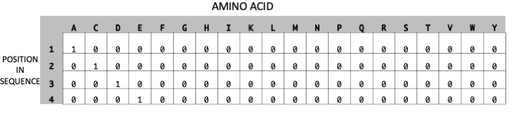
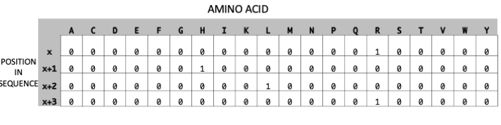
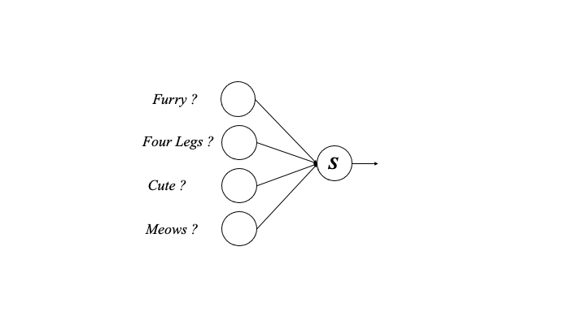
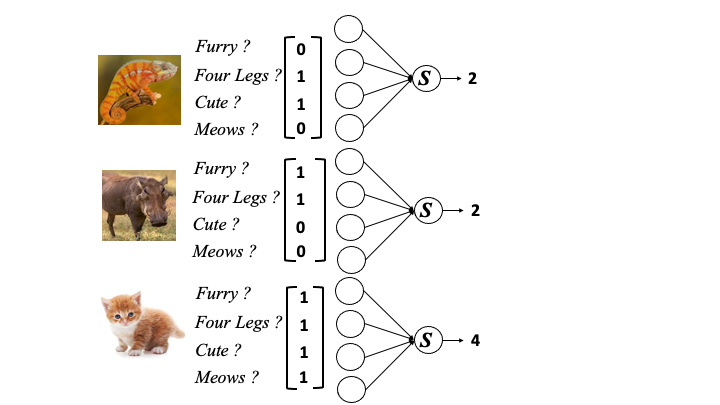
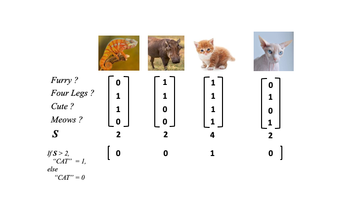
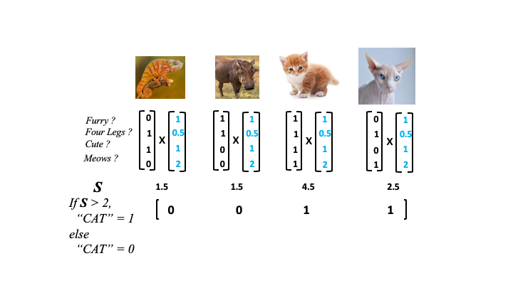
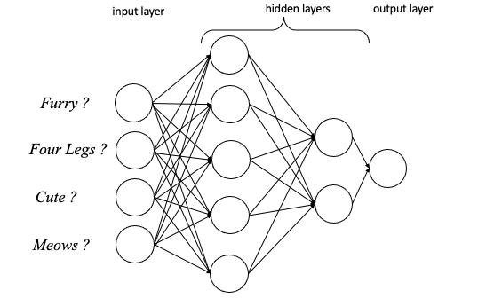

Topic 6 Deep Learning
- Questions
- What is Deep Learning?
- How is Deep Learning distinct from classical Machine Learning?
- Objectives
- Discuss how cryptic patterns can find their own important features in arbitrary data sets
- Study the outline of training a Neural Network
- Build and test a simple Neural Network
- Key Points
- Deep Learners find important features and patterns in the data automatically
- Neural Networks use optimised weights to learn classifications
- Power comes at the expense of interpretability
6.1 About this chapter
In this chapter we’ll look at the latest advance in Machine Learning, a special set of extremely powerful techniques called Deep Learning. Deep learning methods are the ones that have been used in headline grabbing Artificial Intelligence toold from large scale facial recognition, data mining to influence voters on social media, voice recognition like Siri and Alexa, Netflix’s suggestion algorithm, Google’s advertising algorithm, and in science things like AlphaFold - the protein folding prediction tool and medical image analysis.
These tools and algorithms are a wide family of their own and have properties distinct from the machine learning techniques we’ve looked at so far, principally these types are able to select the most important features themselves and work out what is the most reliable data. They are also much more complicated in practice and much more dense so they become a black box and we are less able to interpret how they are making the decisions they make. This is the trade off we make when using Deep Learning.
6.2 Feature Selection in Deep Learning
In the previous tools we’ve looked at we used a \(np\) feature matrix, with \(p\) features - a column of data for each thing we measured. Feature selection is really important and can make or break the usefulness of a machine learning tool. If the features we select can’t differentiate between the classes, then the machine learning tool will never be able to make good predictions. Consider what it would be like if we tried to work out a person’s hair colour from their height! Height is an easy thing to measure but does it ever predict a person’s hair?
So we must pick our features carefully if we’re to make use of ML generally, but with Deep Learning the algorithms themselves work out which are the most useful features and also patterns within the features and preferentially use them. This leads to a bit of a kitchen sink approach, we can take all the features we like, pump them into a Deep Learning algorithm and let it decide the best way to use them. A practical upside of this then is that our \(np\) feature matrix can become very complicated and we can start to squeeze pretty much anything into the training data. We simply have to be able to encode it as numbers somehow.
6.3 Cryptic patterns in Deep Learning
The ability to automatically select features or patterns to use means that the algorithms can find and use patterns that we don’t specify explicitly and in fact don’t even know about. To understand this, let’s work through a protein sequence based example. Our first issue with biological sequences is the question of how to encode it as numbers. One common way of taking a categoric thing and making it numeric is to use ‘One Hot Encoding’. Which looks like this:

This encoding represents the protein sequence ‘ACDE’, the columns represent the alphabet of amino acids (in alphabetic order), the rows represent the position of sequence. We add a 1 at the intersection of the position and amino acid to show the amino acid at each position. Each row therefore has only one row.
Once we have an encoding, patterns will start to appear that the algorithms can use. Consider a protein motif, like RHLR - that would look like this in our one hot encoding.

Now wherever the pattern crops up the algorithm will see it. The pattern can become associated with a particular class and used as part of the signal for classification. We didn’t have to say ‘protein has RHLR’, if it’s an important pattern and associated with a class or group then the algorithm will use it.
6.3.1 Implications of Cryptic Patterns
Being able to select its own features and patterns means that the Deep Learning methods get a special sort of sensitivity. Considering our protein example again, then lots of properties of the proteins that are reliant on sequence at some level will be detectable and useable in some way by the Deep Learner. Things like physico-chemical sequence properties such as hydrophobicity are reliant on the actual amino acids to exist so they can be captured and used.
An important thing to note is that the patterns have only to be associated, not over-represented, on the whole. The Deep Learners might find a pattern that occurs only a few times in millions of example data, but if it is associated pretty uniquely with just one class or group then it can be used. This stands in contrast to typical methods of pattern finding in bioinformatics, which use majority or statistical over-representation. The patterns often have weight with other patterns and these associations increase the patterns power too.
The ability to find cryptic patterns and make associations is reliant on having a great deal of training data. Deep Learning methods do require lots more data than the ML methods we’ve already looked at and this can be a drawback in practice.
Deep Learning models internal representations become very large and hard to interpret, so that actually understanding what they’re using to classify upon can become impossible. This is a significant trade off for the high power that we can get
6.4 Neural Networks
The core of most Deep Learning models and model types is the neural network, let’s run through how that works to gain some insight into how it gets its power.
6.4.1 The Perceptron
Neural networks are made up of units called Perceptrons, these are mathematical structures inspired by biological neurons. They take multiple inputs, integrate them in some way and produce an output. One that worked on our animal matrix might look like this

6.4.2 The Network
Combining lots of perceptrons results in a neural network and at a basic level might work with our animal data like this,

Making sense of all the integrations from the neural network, that is the calling of a class (in this case is_a_cat) is done by a decision function, here that may look like this
if S > 2,
cat = 1
else
cat = 0Applied to the animal neural network the animal data classifications end up like this

Only one of the actual cats was correctly labelled. The clever part of the neural network is to apply weights to each of the features that modify the value they add to the neural network (in the figure below as blue values).

Weights work to give the more useful features higher values (like meows) and less useful features lower values (like four legs). The network can now more accurately classify the animals in the picture.
6.4.3 Neural Network Structure
The networks needn’t be restricted to simple structures in which the initial inputs go straight to the output, many layers of neurons can be made, each arbitrary numbers of neurons deep. These extra layers are called the hidden layers

The hidden layers increase the power of the neural network by allowing for further integration of information and extra weighting. But they also make the network more obscure and hard to read, again this is how the power of the neural network comes at the expense of interpretability.
6.4.4 Training to find weights
The main part of training the neural network and the place it makes itself powerful is in the weight finding phase. This is called the learning or training phase. To do this the training algorithm goes back and forth across the network methodically adjusting the weights until it sees no further improvement when classifying on the training data - it is constantly comparing its current state against the answers in the training data.
6.4.5 Neural network training phases are long and involved
As you can see there is a lot about neural networks to be specified and optimised. The number and depth of hidden layers that is optimal varies for each data set and there is no rule to follow as to what will be best. It is also not true that bigger is always better. The weights of the neural network must also be optimised for every data set, and we must be careful to use training data that is distinct from our test data to be confident in the generality of our resulting model. As a result of these considerations the training and testing phases of neural networks are particularly involved.
We won’t go through that whole procedure here, though you should be aware of it as it is the key to a truly useful deep learning model. But we will try out a small neural network in R.
6.5 A simple neural network in R
6.5.1 Frog Data
In this example we shall use some data on amphibian presence at various sites. Here’s a glimpse() of the train_rows, we also have a test_rows
## Rows: 94
## Columns: 20
## $ SR <dbl> 1000, 100, 200, 30000, 10050, 700, 50, 8000, 2500, …
## $ NR <dbl> 1, 1, 1, 1, 1, 1, 1, 1, 1, 1, 4, 1, 1, 2, 1, 1, 1, …
## $ TR <dbl> 1, 1, 5, 1, 1, 5, 1, 1, 1, 2, 1, 1, 1, 1, 14, 1, 14…
## $ VR <dbl> 3, 2, 1, 3, 2, 2, 2, 3, 3, 0, 1, 2, 3, 2, 3, 3, 1, …
## $ SUR1 <dbl> 2, 2, 10, 1, 1, 10, 2, 2, 10, 6, 2, 2, 2, 2, 7, 2, …
## $ SUR2 <dbl> 1, 7, 6, 1, 10, 6, 7, 10, 2, 9, 7, 7, 2, 10, 2, 2, …
## $ SUR3 <dbl> 9, 6, 10, 1, 6, 9, 10, 7, 6, 2, 6, 9, 1, 10, 1, 7, …
## $ UR <dbl> 0, 0, 3, 0, 0, 0, 0, 0, 0, 0, 3, 0, 1, 0, 0, 0, 0, …
## $ FR <dbl> 0, 0, 4, 0, 1, 0, 0, 0, 1, 0, 2, 0, 0, 0, 0, 0, 0, …
## $ OR <dbl> 100, 100, 75, 100, 100, 100, 100, 100, 100, 50, 100…
## $ RR <dbl> 2, 2, 1, 2, 5, 1, 5, 9, 0, 0, 0, 0, 5, 1, 5, 0, 5, …
## $ BR <dbl> 5, 2, 1, 10, 5, 1, 5, 9, 1, 0, 0, 0, 5, 5, 5, 1, 5,…
## $ MR <dbl> 0, 2, 0, 0, 0, 0, 0, 0, 0, 0, 0, 0, 0, 0, 0, 0, 0, …
## $ CR <dbl> 1, 1, 1, 1, 1, 1, 1, 1, 1, 1, 1, 1, 1, 1, 1, 1, 1, …
## $ Green_frogs <dbl> 0, 1, 0, 1, 0, 1, 1, 0, 1, 1, 1, 0, 1, 0, 1, 0, 0, …
## $ Brown_frogs <dbl> 0, 0, 1, 1, 1, 1, 1, 1, 0, 1, 1, 0, 1, 1, 1, 1, 1, …
## $ Common_toad <dbl> 0, 0, 1, 1, 1, 0, 1, 1, 1, 1, 1, 1, 1, 0, 1, 1, 1, …
## $ Tree_frog <dbl> 1, 0, 0, 1, 0, 0, 0, 0, 0, 0, 0, 0, 0, 0, 1, 1, 1, …
## $ Common_newt <dbl> 0, 0, 1, 0, 1, 0, 0, 0, 1, 0, 0, 0, 1, 0, 1, 0, 0, …
## $ Great_crested_newt <dbl> 0, 0, 0, 0, 1, 0, 0, 0, 0, 0, 0, 0, 1, 0, 0, 0, 0, …These data are from (Blachnik, Sołtysiak, and Dąbrowska 2019) originally and you can see a description of the 20 columns at https://archive.ics.uci.edu/ml/datasets/Amphibians. Briefly, they are things like the presence and size and maintenance of reservoirs and the surrounding area, whether humans use the area, whether there is fishing. All potentially pertinent measurements. The presence of different types of amphibian species are recorded as 1 for present, and 0 for not present.
We could use a neural network to predict any of the species listed, but let’s work on predicting Green_frogs.
We’ll use the straightforward neuralnet() function in the neuralnet package for this. It can take an R formula specification, which as you’ll recall takes the form y ~ feature_1 + feature_2 ... where y is the thing to be predicted and feature_x are the features to input for prediction with. With 19 to enter, that’s lots of typing, so I’ve squashed it into a variable called long_formula
## Green_frogs ~ SR + NR + TR + VR + SUR1 + SUR2 + SUR3 + UR + FR +
## OR + RR + BR + MR + CR + Green_frogs + Brown_frogs + Common_toad +
## Tree_frog + Common_newt + Great_crested_newt6.5.3 Testing the neural network
The compute() function takes a neural network model and data and creates predictions. Here we feed it our test data. However when we look at the resulting predictions (stored in the net.result slot in our predictions object) we see something odd.
## [,1]
## [1,] 0.998154554
## [2,] 0.998147802
## [3,] 0.008503821
## [4,] 0.998154554
## [5,] 0.996971835
## [6,] 0.006267082The predictions are not of classes, but are actually numbers that represent the level of sureness the model has that the site has Green Frogs. This value is sometimes useful, but we need to convert it to classes to evaluate it. As the values run between 0 and 1 we can do that by simple rounding so that any prediction over 0.5 is considered a present prediction, anything below is consider an absent predictions (other algorithms and functions exist for this conversion).
We can then put those binarised predictions into the confusionMatrix() function we used previously alongside the true values from the test_rows data (remembering to convert them to factors as they are not already).
## Confusion Matrix and Statistics
##
## Reference
## Prediction 0 1
## 0 30 4
## 1 19 42
##
## Accuracy : 0.7579
## 95% CI : (0.6592, 0.8399)
## No Information Rate : 0.5158
## P-Value [Acc > NIR] : 1.097e-06
##
## Kappa : 0.5201
##
## Mcnemar's Test P-Value : 0.003509
##
## Sensitivity : 0.6122
## Specificity : 0.9130
## Pos Pred Value : 0.8824
## Neg Pred Value : 0.6885
## Prevalence : 0.5158
## Detection Rate : 0.3158
## Detection Prevalence : 0.3579
## Balanced Accuracy : 0.7626
##
## 'Positive' Class : 0
## We can see the resulting network has about 60% sensitivity and 90% specificity, so missing a lot of real green frog sites.
As you can imagine the exact choice of the parameters can make a difference on final neural network performance. This is just one instance. In real analyses we would try out many different hidden layer and other parameter configurations and select the best performing at the the testing stage. That may then even move on to a further fine tuning stage, the development of machine learners is art as much as it is science.
6.5.4 Examining the structure of the neural network
The neuralnet package we used here was chosen not least because it is straightforward and fast, but also because it is possible to get a plot of the created network.

Note that the first layer corresponds to the input columns in the data with one neuron each, these then feed into the 3 hidden layers we specified of 20,15 and 5 layers each and finally the one neuron layer intergrating everything to give us the final prediction on whether we have a Green Frog.
We can see that the neural network we made is really complex. Even with just the small number of input features and hidden layers we have the combinations of weights and their effect into the next layer is too hard to understand (even if the plot were readable). This shows us how neural network structures become black boxes, we can’t be sure which of the input variables (or combinations of which) were most important in making the classifications.
- Deep Learners choose their own features
- Deep Learners like neural networks can work on patterns we dont explicitly state
- Neural network training means finding weights that give the best classifications
- Neural networks are black boxes and hard to interpret
References
Blachnik, Marcin, Marek Sołtysiak, and Dominika Dąbrowska. 2019. “Predicting Presence of Amphibian Species Using Features Obtained from Gis and Satellite Images.” ISPRS International Journal of Geo-Information 8 (3). https://doi.org/10.3390/ijgi8030123.